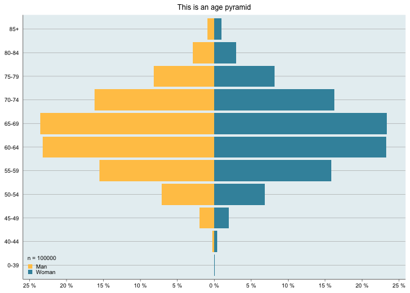

The goal of rcplot is to implement the design used as default at Registercentrum with figures produced by ggplot2. Functions are used for the annual report and more.
Installation
You can install the development version from GitHub with:
# install.packages("devtools")
devtools::install_github("registercentrum/rcplot")Example
Here are some example plots but please see the individual manual pages for a comprehensive list.
library(rcplot)
set.seed(123)
# Create some data
df <- data.frame(age = rpois(100000, 65),
gender = sample(c('Woman', 'Woman', 'Man'), 100000, replace = TRUE))
# Age pyramid
age_pyramid(df, age_var = 'age', gender_var = 'gender',
man_level = 'Man', title = "This is an age pyramid")

# KM-plot with 2 levels
survfit_obj <-
survival::survfit(survival::Surv(time/365.24, status) ~ sex,
data = survival::colon
)
km_plot(survfit_obj, y_lim = c(40,100), y_breaks = 10, x_lim = c(0,9))